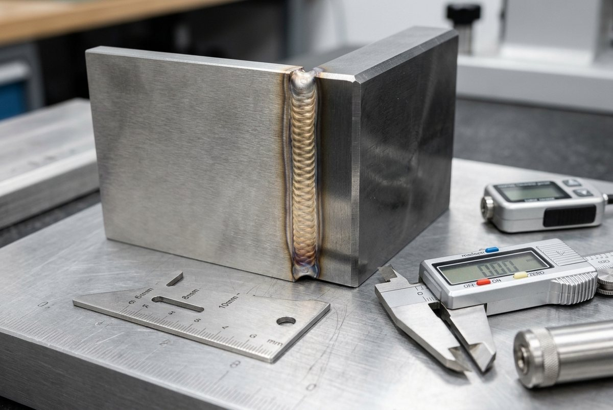

Welding & Fabrication of Specialized Steel Structures (MIG/MAG & TIG)
We execute demanding welding contracts and the fabrication of complex structural weldments. Our workshop is equipped with two radio-controlled overhead cranes with a lifting capacity of 5 tons each, allowing smooth and safe handling of oversized assemblies. Assembly work is conducted on heavy modular 3D welding tables, guaranteeing strict angular geometry and dimensional accuracy.
We weld carbon structural steel, stainless steel, and acid-resistant alloys for demanding industries including food, chemical, and heavy machinery.
- Machinery & Equipment Frames — precision bodies, structural chassis, heavy industrial bases.
- Prefabrication of Structural Steel for Construction — ready-to-assemble structural elements for halls, industrial plants, and civil infrastructure.
- Material Handling System Components — conveyor sub-assemblies, industrial transit frames, and transfer lines.
- Complete Production Lines — complete modules, structural frames, and advanced workstation sections of industrial assembly lines.
- Welding Jigs & Assembly Fixtures — dedicated positioning, locating, and clamping fixtures that accelerate manufacturing repeatability.
- Custom Fabrications for Demanding Industries — mission-critical weldments manufactured under strict compliance for rail, power, offshore, and defense sectors.

Airless Spray Painting & Surface Preparation
At ALYNX Engineering, we deliver durable, comprehensive corrosion protection systems for steel structures, meeting stringent international standards for heavy industry, construction, offshore, and energy sectors.
A critical factor in achieving long-term coating adhesion is surface preparation. Our automated and manual shot blasting facilities ensure rapid, repeatable, and precise steel cleaning to required cleanliness grades (Sa 2.5 / Sa 3.0).
Coating applications are carried out in a high-capacity industrial paint shop utilizing airless spray technology. This process applies high-build epoxy, polyurethane, or zinc primers and topcoats evenly, delivering maximum resistance to atmospheric, chemical, and marine degradation.
- High-Capacity Industrial Paint Shop — engineered for high-throughput handling of oversized structures and series production runs.
- Automated Shot Blasting — precise substrate preparation guaranteeing optimal paint adhesion and total removal of mill scale and corrosion.
- Airless Spray Painting — high quality, pore-free coating continuity achieving exact dry film thickness (DFT) specifications.
- Specialized Protective Coating Systems — application of epoxy, polyurethane, and zinc coating specifications for offshore, railway, and energy sectors.
- Coating Quality Inspection — dry film thickness (DFT) logging, ambient condition monitoring, and adhesion verification.

Large-Scale CNC Machining & Precision Sheet Cutting
At ALYNX Engineering, we provide complete turnkey delivery — from raw certified steel, through cutting, welding, and CNC machining, to coating and final assembly. To ensure our clients face zero dimensional or capacity limits, advanced machining and heavy cutting are executed in partnership with our audited, proven regional supplier network.
Leveraging our established network of certified machine shops in Stalowa Wola’s industrial basin, we seamlessly coordinate large-scale CNC machining of welded assemblies, as well as precision laser and plasma-oxygen plate cutting. We take full single-source responsibility for schedules, tolerances, and quality.
- Large-Scale CNC Machining of Welded Structures — high-precision gantry milling, turning, and boring of heavy machine bodies and welded chassis.
- Laser Sheet Metal Cutting — exceptional edge quality and tight tolerances for carbon, stainless, and aluminum alloys.
- HD Plasma & Oxy-Fuel Cutting — efficient cutting of thick structural plates and large-format sheets for further fabrication.
- Turnkey Delivery — full supply chain management (from mill steel purchase, through CNC machining, to welding and painting) under a single contract with ALYNX Engineering.
- Quality Guarantee & Engineering Supervision — continuous dimensional and quality verification of all outsourced operations by our engineers.

3D CAD Design, Technical Documentation & Engineering Supervision
Our in-house design and technology office forms the engineering backbone of ALYNX. We bridge sophisticated CAD software with hands-on fabrication and welding experience, providing complete engineering support from initial napkin sketches to full commissioning.
We construct solid 3D CAD models and 2D fabrication drawing packages. We do not just draft — we manage and supervise the entire product lifecycle, optimizing manufacturing costs (DFM) and recommending optimal steel grades, weld geometries, and fabrication processes.
- 3D CAD Mechanical Design — solid modeling of machinery, automation lines, and heavy structural steel weldments.
- 2D Shop Drawing Development — complete fabrication, workshop, and erection drawings compliant with relevant ISO/EN standards.
- Comprehensive Project Management & Supervision — complete engineering oversight across schedule, budget, and quality from concept to finished product.
- Engineering Advisory (DFM) — structural optimization for material savings and efficient welding/machining workflows.
- Reverse Engineering & Modernization — recreating technical documentation from physical components and upgrading legacy production systems.

Quality Assurance & Manufacturing Standards
Our Quality Assurance department ensures every assembly departing our Stalowa Wola plant satisfies strict client specifications and international industry standards.
We place prime emphasis on meticulous weld preparation — from accurate layout, beveling, and joint cleaning, to dimensional checking on precision modular clamping tables. We maintain the highest standards of weld integrity, delivering smooth, uniform weld toes free from internal discontinuities. Quality checks also encompass CMM/manual post-CNC dimensional reports and coating inspection logs.
- High Welding Standards — rigorous weld inspection covering throat thickness, penetration, and compliance with ISO 5817 acceptance levels.
- Meticulous Material Preparation — precise edge beveling, grinding, and degreasing prior to fit-up, ensuring maximum joint strength.
- Geometric & Dimensional Verification — full coordinate and dimensional verification on modular 3D tables and post-machining reports.
- Protective Coating Inspection — dry film thickness (DFT) measurements and substrate cleanliness assessment after shot blasting.
- Full Traceability & Documentation — 3.1 mill test certificate logging, heat number tracing, and comprehensive quality documentation dossiers.
